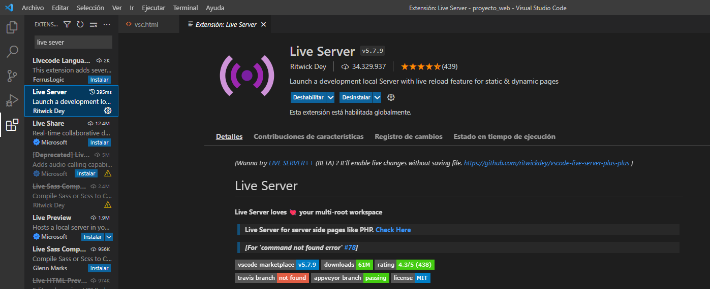

| Contenido | |
| Propósito del Software | Proceso de instalación |
| Video de instalación (Auxiliar) | Evidencia de instalación |
Visual Studio Code es un editor de código fuente desarrollado por Microsoft para Windows, Linux, macOS y Web. Incluye soporte para la depuración, control integrado de Git, resaltado de sintaxis, finalización inteligente de código, fragmentos y refactorización de código.
Para instalar Visual Studio Code, deberás:
En este video se explica el proceso de instalación de Visual Studio Code
Esta es mi evidencia de instalación
